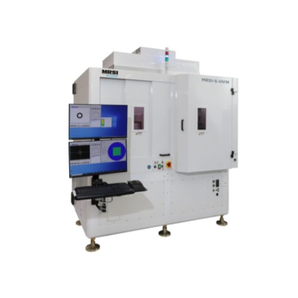

0.5um黏晶機(Die Bonder)
產品型號：MRSI-S-HVM
- MRSI-S-HVM是為半導體與光通訊元件量產製造的應用而設計的，可用於半導體晶圓級封裝，多芯片、多工藝在一台機器上生產。
- 兩種模式自動切換: ±0.5 微米 @ 3σ; ±1.5 微米 @ 3σ；兩者均具有Z軸向力控制的貼片模式，並可選MRSI專利的高壓力功能。
- 適用於晶片到晶圓封裝(CoW)，晶片到中介層的封裝 (CoI)，以及矽光子晶片封裝。可從III-V族晶圓片(8英吋)提取晶片放置於12英吋晶圓上，並可以記錄位置。
- 支持多工藝：包括DAF、共晶、環氧蘸膠和點膠，可以使用頂部或底部加熱模式，及MRSI專利的底部雷射加熱。
- 可直接對準覆晶晶片上和基板上的基準，不需要額外的參考點或校準。配有MRSI 專利的自動調平晶圓平台。
- MRSI-S-HVM繼承了MRSI-HVM所有便於並行工序的設計，包括MRSI專利的自動吸頭切換和雙龍門/黏晶頭結構。
- 材料輸入方法包括wafer, Waffle pack, Gel-Pak®，以及客制化的夾具。
對客戶的價值
- 行業領先的出貨量，卓越的靈活性，更多的工藝選項，和大批量高混合製造中超高的精度。
- 通過在5微米和1.5微米模式之間自動切換，可以在一台機器內平衡不同精度的晶片封裝，為客戶提供最佳的生產能力和投資回報率。
- Windows™平台上運行的基於圖標的軟件界面，易於使用，便於編程和低成本維護。
- 行業領先的本地技術支持團隊和應用專家
- 超過35年的行業經驗保證了設備全天候可靠運行